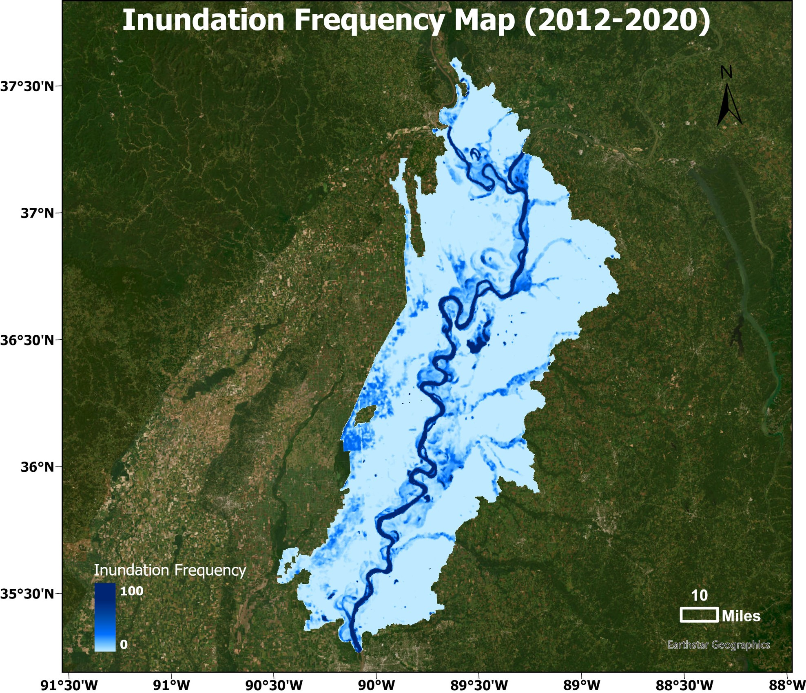
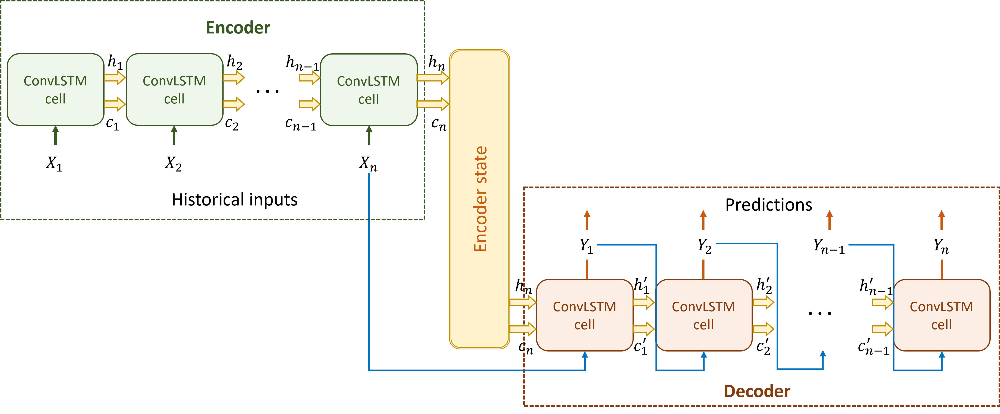
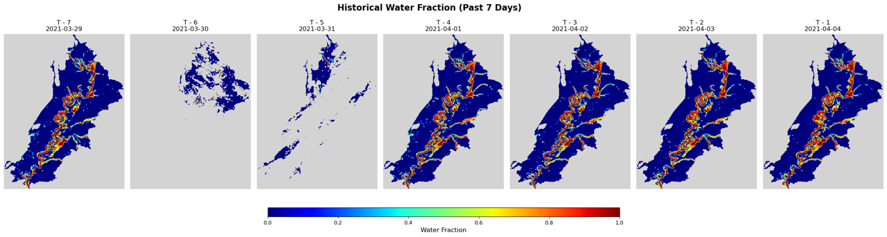
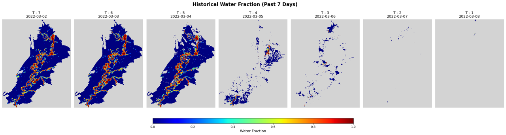

Introduction
Accurate and timely flood extent forecasting is crucial for flood management. While traditional hydrodynamic modeling simulates water flow well, it faces challenges in large-scale applications due to computational complexity. In this project, we utilize Visible Infrared Imaging Radiometer Suite (VIIRS) water fraction maps for long-term flood monitoring and analysis. Moreover, we present a novel real-time flood forecasting model based on a ConvLSTM network. The model integrates VIIRS water fraction maps and USGS streamflow data to capture spatio-temporal dependencies. Its encoder-decoder architecture enhances interpretability. Experimental results on the Upper Mississippi Alluvial Plain (UMAP) validate the model’s effectiveness.
Data
VIIRS Water Fraction Maps
VIIRS Sensor Resolution
| Spatial | 375 m, 750 m |
| Spectral | 22 spectral bands (0.402 - 12.49 µm) |
| Temporal | Daily (2012 - Present) |
The Visible Infrared Imaging Radiometer Suite (VIIRS) is aboard the joint NASA/NOAA Suomi National Polar-orbiting Partnership (Suomi NPP) and NOAA platforms. VIIRS collects visible and infrared imagery along with global observations of Earth's land, atmosphere, cryosphere, and ocean.
VIIRS extends observational records collected by similar instruments aboard previously-launched satellites, such as NASA's Moderate Resolution Imaging Spectroradiometer (MODIS) and NOAA's Advanced Very High Resolution Radiometer (AVHRR).
VIIRS water fraction maps describe, the percentage of the surface that is covered by water within each 375m pixel. The basic idea is to use the spectral contrast between water and land and then translate the signal strength into a fractional value rather than a simple water/non-water label.
Source: FEMA ArcGIS Web AppViewer
USGS Streamflow Data
U.S. Geological Survey (USGS) maintains thousands of streamgages that record water level and convert it to discharge through a rating curve. Many sites report in near real time, stored in the National Water Information System, and made available through web services for research, water management, and flood monitoring.
Study Area
Study Area
- Total Area: 16053.59 km²
- Stretches along the Mississippi River, covering parts of Missouri, Illinois, Arkansas, Tennessee, and Kentucky.
- Nowadays, UMAP region is almost entirely cleared for cropland. It produces corn, wheat, soybeans, feed grain, and hay for livestock.
- Flood management and forecasting can mitigate crop losses and ensure food security by identifying flood-prone regions.
Long-term Flood Pattern Analysis
Data Processing
Class Labels of Original VIIRS Data
To quantify flood inundation accurately, we performed a re-classification process on the raw VIIRS data. As shown in the figure, the original dataset contains multiple labels for various land covers (e.g., Snow, Ice, and Vegetation) and quality flags (e.g., Cloud, Shadow).
We filtered out these non-water classes to exclusively focus on the Water Fraction information, which is critical for identifying sub-pixel inundation.
Preprocessing Workflow
- ✓ Mask out NoData pixels
- ✓ Classify non-water as water fraction = 0%
- ✓ Classify normal water as water fraction = 100%
- ✓ Rescale water fraction to 0-100%
Processed VIIRS Data Sample
Cloud Gap Filling
A major challenge of VIIRS optical imagery is cloud cover, which creates gaps in the data.
Temporal Linear interpolation is used to fill these gaps and improve data continuity, wchich uses information from the same pixel at two known times to estimate a missing value at an intermediate time. It assumes that the physical variable changes at a roughly steady rate between the two valid observations.
This is applied pixel by pixel. For each cloud pixel, the algorithm searches backward and forward in time to find the nearest valid maps. For a pixel with a missing value at time \(t\), and two valid observations at times \(t_{1}\) and \(t_{2}\) (where \(t_{1} < t < t_{2}\)), the method computes the slope between the two known values and applies it to estimate the value at \(t\).
\(x(t)=x(t_1)+\dfrac{x(t_2)-x(t_1)}{t_2-t_1}(t-t_1)\)
Linear Interpolation Formula
Original (with Gaps)
Raw water fraction maps showing missing data.
Gap-filled (Interpolated)
Continuous data after linear interpolation.
Flood Patterns (2012–2020)
We use the VIIRS water fraction product to identify surface water occurence. A threshold of 0 is applied meaning all pixels with water fraction greater than 0 are classified as water in the binary map. By analyzing the binary maps over time, we calculate flood frequency at each pixel to quantify how often flooding occurs. This allows us to characterize long-term flood patterns and identify areas that are frequently inundated.
Flood Frequency Map
Highlights the recurrence of inundation events over 9 years. Darker blue areas mark locations where water occurred very frequently, mainly along the river channel and connected floodplain depressions. Lighter blue areas indicate locations that were inundated less often, usually higher floodplain surfaces or regions farther from the main channel.
Maximum Inundation Map

The red areas form a continuous corridor along the main river and its major branches. These red zones represent pixels where the water fraction reached very high values, close to full water coverage. This is consistent with the active river channel and the low-lying floodplain zones that routinely accommodate deep or sustained water.
We compare the daily inundation area derived from VIIRS observations with the USGS streamflow data from 2012 to 2020. The blue curve shows the changes in inundated area, while the green curve represents river discharge. Both time series display a clear seasonal cycle. Peaks frequently occur in spring, when higher streamflow leads to expanded flooding. During years with major flood events, the two curves rise sharply together, indicating a strong link between discharge increase and surface water spread. The circled periods around 2014, 2015–2016, and 2019–2020 illustrate rapid growth in inundation area following large streamflow pulses.
Daily Inundation Area vs. USGS Streamflow (2012–2020)
Real-time Flood Forecasting
Methodology
ConvLSTM-based Flood Forecasting Model
This model integrates historical hydrologic observations with satellite-derived inundation maps to predict future inundation patterns. The inputs include daily VIIRS water fraction maps and corresponding streamflow data from USGS. These inputs form a time series that captures both spatial variations and temporal changes of flooding.
A ConvLSTM network is used to learn these spatio-temporal relationships. Convolutional layers extract spatial structure in the water maps, while the recurrent LSTM mechanism models temporal evolution across days. After learning the joint dynamics, the model generates multi-day forecasts of water fraction maps, providing predictions of where flooding is likely to expand in the future.
Overall, the model takes advantage of both spatial information in satellite imagery and temporal hydrologic patterns in streamflow data to improve flood forecasting performance.
ConvLSTM Structure
- Encoder: Learn spatial-temporal patterns from historical inputs and store memory into the final state.
- Decoder: Use the stored state to generate future predictions step-by-step, producing a sequence of output maps.
- Training: Minimize the mean squared error between predicted water fractions and true observations.
Case Study
We conduct two flood forecasting case studies focusing on peak-flow events. The first case examines a major flooding period in April 2021, and the second evaluates another high-flow event in March 2022. These events provide representative scenarios to assess the model’s capability to predict rapid expansion of inundation during peak discharge conditions.
Case Study 1 (April 2021)
Input History
Forecasting Results
Case Study 2 (March 2022)
Input History
Forecasting Results
Summary
-
Spatio-temporal Analysis & Validation
- We conducted a long-term flood pattern analysis (2012–2020) over the UMAP region with inundation frequency map and maximum inundation extent map.
- We validated the temporal correlation between remote sensing observation with in-situ measurement data.
-
Deep Learning Forecasting
- We developed a novel ConvLSTM-based model with an encoder-decoder architecture. This approach effectively learns the joint spatio-temporal dependencies from multimodal data, enabling accurate short-term flood inundation extent forecasting.
-
Limitation & Future Work
- While the model performs well under clear conditions, optical imagery limitations (specifically heavy cloud cover) remain a challenge for continuous validation.
- Future work could explore data fusion techniques to integrate SAR observations, which can penetrate clouds, thereby enhancing model robustness and forecasting accuracy.